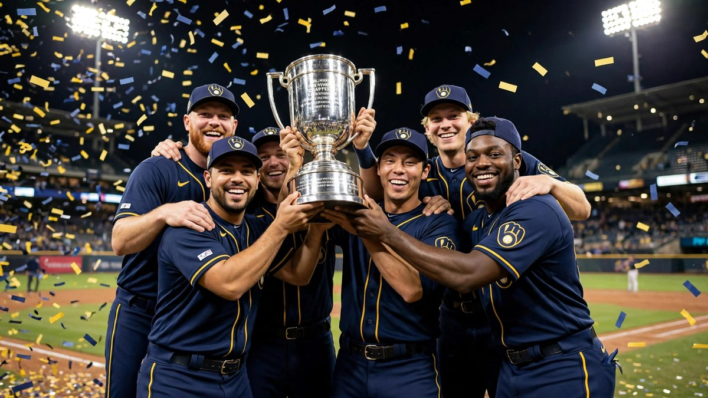

Brewers win first World Series title in 57 years
The Milwaukee Brewers beat the Tampa Bay Rays 4-1 in Game 5 on 28 October to win the World Series 4-1, their first title in the franchise's 57-year history.

The Milwaukee Brewers are World Series champions for the first time. They beat the Tampa Bay Rays 4-1 in Game 5 on Wednesday, October 28, at Tropicana Field in St. Petersburg, Florida, and won the series 4-1. The title ends a 57-year wait for the franchise.
Read More
Milwaukee was the best team in baseball all season. The Brewers won 103 games in the regular season and finished with 114 wins including the playoffs, after an 11-2 run through October. They led the majors in batting average and on-base percentage and ranked second in team ERA.
Their road to the title went through the strongest teams. They beat the San Diego Padres in four games and then swept the two-time defending champion Los Angeles Dodgers. The Dodgers roster cost $338 million, more than double the $144 million roster in Milwaukee.
The young players carried the final games. Rookie shortstop Cooper Pratt, who only reached the majors in June, hit six times in a row across Games 4 and 5, including a home run in the 12th inning of Game 4 and a two-run single in Game 5. Catcher William Contreras handled a near-perfect pitching staff and had eight hits in the series.
The wait had been long. Milwaukee had reached the World Series only once before, in 1982, and had lost in the National League Championship Series in 2011, 2018 and 2025. Manager Pat Murphy and executive Matt Arnold took over after Craig Counsell and David Stearns left for bigger-market clubs, and this team won with a young group that stayed together.
What People Say
As long as the Yankees and Dodgers don't win it all, I'm good with whoever wins it.
We don't need approval or respect....because we're the World Series Champs and swallow that. Best record in baseball, We swept the most expensive team in history, the hottest closer in Mason Miller, and almost swept the Rays who finished with the second best record in the league
I wonder if Milwaukee will be as crazy as Chicago was when the Cubs won. This a huge victory im interested to see how Milwaukee celebrates
As a Dodgers fan I want to congratulate the Brewers and their fans for winning the World Series. You finally erased the ghost of 1957. It was the then Milwaukee Braves who pulled the upset over the Yankees to win Milwaukee's last World Series Championship. Salute to Milwaukee!! Job well done. I know Bob Uecker is smiling up above.
The Brewers just showed the blueprint on how to win the World Series in October playing old-school baseball
 LeBron James booed by Knicks fans in 76ers debut as MSG chants "we don’t want you"
LeBron James booed by Knicks fans in 76ers debut as MSG chants "we don’t want you" Brewers beat Dodgers 6-4 to sweep NLCS and reach first World Series since 1982
Brewers beat Dodgers 6-4 to sweep NLCS and reach first World Series since 1982